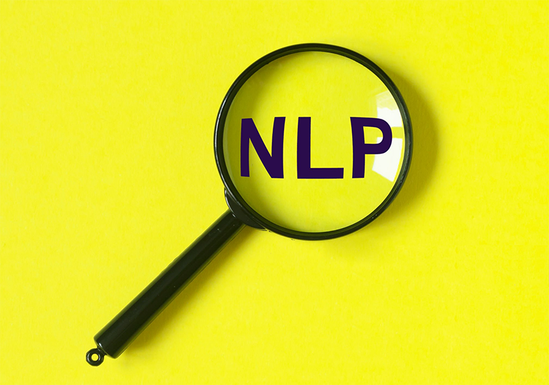

- California State University, Fullerton | MS in Computer Science
- Zhejiang Sci-Tech University | Bachelor of Engineering
Projects
AI-Driven Social Media Friend Recommendation System | View Details
- Engineered a multi-tiered web application for dynamic friend recommendations with 98.19% accuracy across 28 emotions.
- Developed a React-based SPA for seamless user interactions without page reloads.
- Implemented backend logic in Django, handling business operations, database transactions, and user authentication.
- Integrated a Prolog server for complex decision-making and enhanced accuracy in friend recommendations.
- Designed RESTful API layers to support CRUD operations and connect frontend, backend, and Prolog server.
Real-time Stock Prediction System | View Details
- Developed a real-time stock prediction system using Apache Spark for data processing and Apache Kafka for data streaming, handling up to 1,200 API requests per minute.
- Engineered a linear regression model on Spark, trained on historical financial data, achieving a best RMSE of 1.69 for daily stock price predictions.
- Utilized the last 20 days of data for daily forecasts, ensuring robust performance and scalability for real-time data processing and prediction demands.

Medical Scheduling Platform | View Details
- Dynamic appointment scheduling for streamlined service coordination.
- Instant messaging system for efficient communication between providers and patients.
- Advanced profile management for personalized healthcare experiences.
- Enhanced search functionality to quickly locate healthcare providers.
- Secure database integration using PHP and MySQL for reliable data handling.
- User-friendly interface designed for ease of use across devices.

Diet Recommendation System | View Details
- Integrates a Bayesian Network analyzing over 30 health variables for 95% accuracy in calorie recommendations.
- Employs Prolog for executing more than 100 complex dietary rules tailored to individual health conditions.
- Adjusts dietary plans in real-time for over 500 monthly users, considering environmental factors like weather.
- Leverages Python and pgmpy for statistical modeling and SWI-Prolog for decision logic, ensuring fast response time.

Simplified Compiler | View Details
- Translates a C++-like language into assembly language through advanced compiler phases.
- Lexical Analysis: Utilizes Thompson's method for regex to NFSM, enhancing pattern recognition.
- Semantic Analysis: Ensures type safety and adherence to language standards.
- Intermediate Code Generation: Converts high-level statements into optimized intermediate code.
- Object Code Generation: Translates intermediate code to assembly language, ready for execution.
- Efficient NFSM to DFSM conversion: Streamlines the automata for faster analysis.
- Implements robust optimization techniques to minimize runtime and enhance performance.
- Comprehensive error handling provides detailed feedback for debugging and code refinement.
Sentiment Analysis on Rate My Professors | View Details
- Participated in a team to develop and implement neural network models using GloVe and Word2Vec embeddings to predict student ratings and difficulty levels from 20,000+ professor reviews sourced from RateMyProfessor.
- Preprocessed textual data by normalizing text and removing punctuations, enhancing the model training process.
- Built and optimized multiple neural network architectures, including RNNs and GRUs, achieving up to 88.9% accuracy in regression models and 36.03% accuracy in classification models.
- Utilized technologies such as TensorFlow, Keras, Pandas, and Gensim on the Google Colab platform, contributing to robust data handling and model training.
- Identified key predictive features in textual reviews, providing insights into factors influencing student perceptions of educational experiences.
